Le monde vivant présente une diversité remarquable (≈ 30 millions d'espèces) et en même temps une constance de chaque espèce. La génétique étudie la nature, la structure, la transmission et l'expression de l'information génétique (ADN) qui contrôle les caractères héréditaires.
Espèce, lignée, phénotype, génotype, gène, allèle, drépanocytose.
ADN → ARNm → protéine. Transcription, traduction, code génétique.
OGM, enzymes de restriction, plasmides, ADNc, clonage bactérien.
Mutations chromosomiques et géniques. Méiose. Brassage génétique.
Lois de Mendel. Hérédité liée au sexe. Génétique des populations.
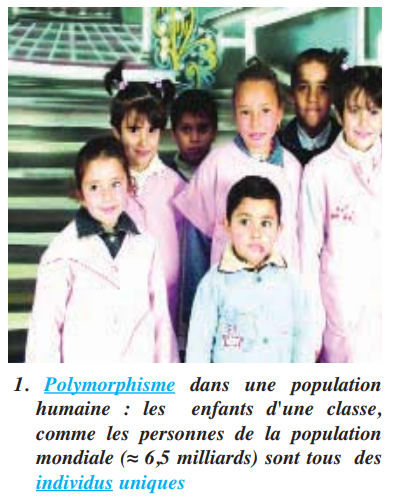
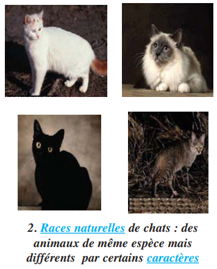
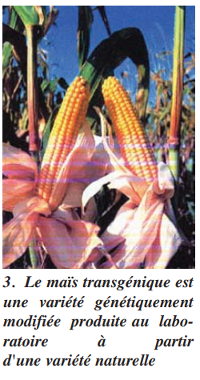
Chaque être vivant est un ensemble de caractères héréditaires déterminés par des informations génétiques (gènes) localisées dans l'ADN des chromosomes. L'information génétique est une séquence de bases azotées qui contrôle la synthèse d'une protéine déterminant le phénotype.
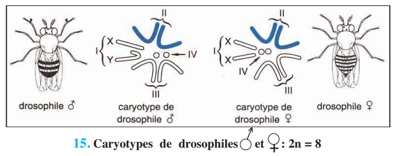
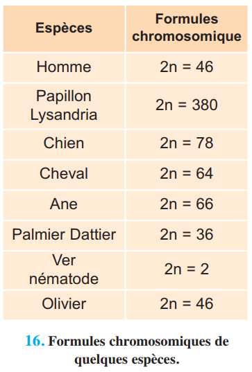
| Espèce | 2n | Espèce | 2n |
|---|---|---|---|
| Homme | 46 | Chien | 78 |
| Drosophile | 8 | Cheval | 64 |
| Blé dur | 28 | Olivier | 46 |
| Blé tendre | 42 | Palmier dattier | 36 |
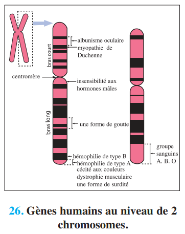
| Terme | Définition correcte |
|---|---|
| Gène | |
| Locus | |
| Allèle | |
| Génome |
Maladie héréditaire qui affecte l'hémoglobine (protéine de transport de l'O₂). Elle illustre parfaitement la relation ADN → protéine → phénotype.
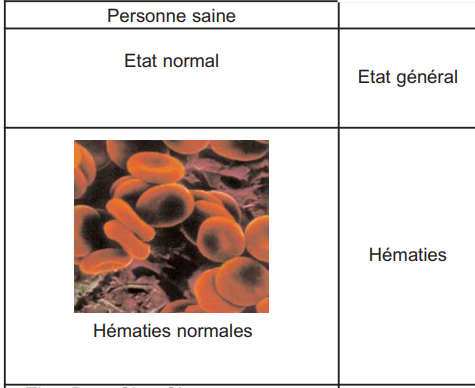
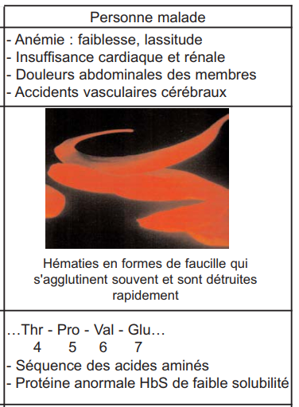
| Niveau | Personne saine (HbA) | Personne malade (HbS) |
|---|---|---|
| Phénotype | État normal — hématies discoïdes | Anémie, douleurs, hématies en faucilles |
| Protéine | HbA — hémoglobine normale soluble | HbS — hémoglobine anormale peu soluble |
| Séquence AA (position 6) | …Thr – Pro – Glu – Glu… | …Thr – Pro – Val – Glu… |
| ADN (triplet n°6) | …CTC CTC TGG… | …CTC CAC TGG… |
| Génotype | A // A (homozygote normal) | S // S (homozygote malade) |
| Génotype hétérozygote | A // S : phénotype intermédiaire (légère anémie) — porteur sain | |
Chaque phénotype résulte de l'expression d'un génotype via la synthèse d'une protéine. Cette synthèse se fait en deux étapes : transcription (ADN → ARNm dans le noyau) et traduction (ARNm → protéine dans le cytoplasme).
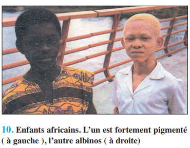
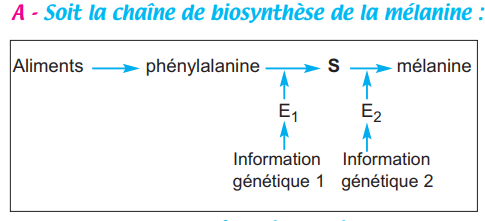
Synthèse de l'ARN messager (ARNm) à partir d'un brin d'ADN (brin transcrit). Se déroule dans le noyau, grâce à l'ARN polymérase. L'ARNm copie fidèlement l'information génétique de l'ADN selon la complémentarité des bases.
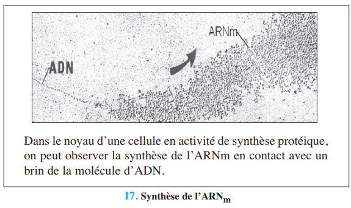
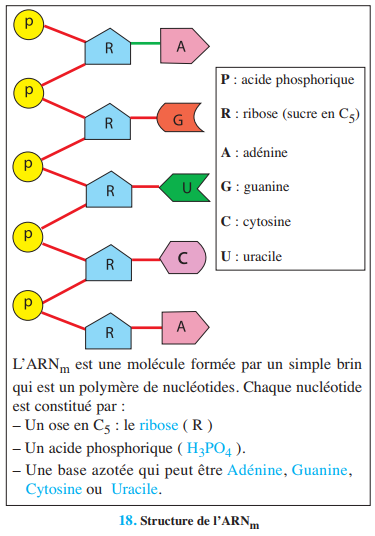
| Critère | ADN | ARNm |
|---|---|---|
| Nombre de brins | Double brin (double hélice) | Simple brin |
| Sucre (ose) | Désoxyribose (C5) | Ribose (C5) |
| Bases azotées | A, T, G, C | A, U (Uracile), G, C |
| Localisation | Noyau (chromosomes) | Noyau → Cytoplasme |
| Rôle | Support de l'information génétique | Messager : transporte l'info vers les ribosomes |
| Brin d'ADN transcrit | ARNm correspondant |
|---|---|
| T – A – C – G – A – C – C – A – C | |
| C – T – C – C – T – C – T – G – G |
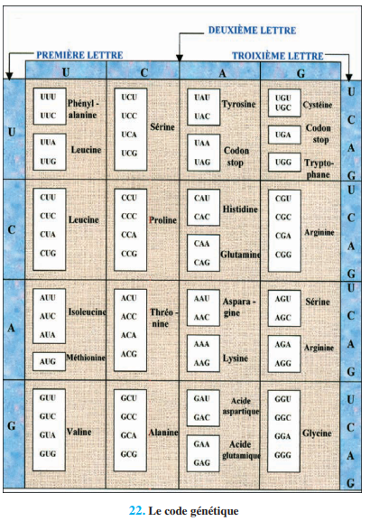
| Phase | Événements |
|---|---|
| 1. Initiation | Petite sous-unité ribosomale + ARNm au niveau du codon AUG → ARNt-Met se fixe (site P) → Grande sous-unité s'associe |
| 2. Élongation | Lecture codon par codon → ARNt portant AA spécifique (site A) → liaison peptidique entre AA → translocation du ribosome → répétition |
| 3. Terminaison | Codon stop (UAA, UAG ou UGA) → dissociation des sous-unités ribosomales → libération du polypeptide |
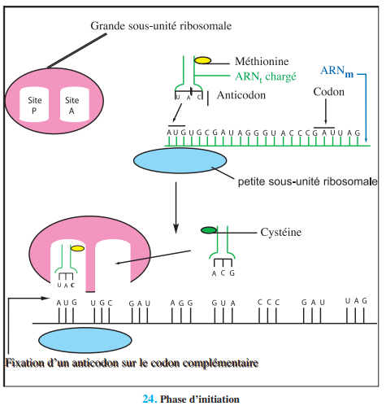
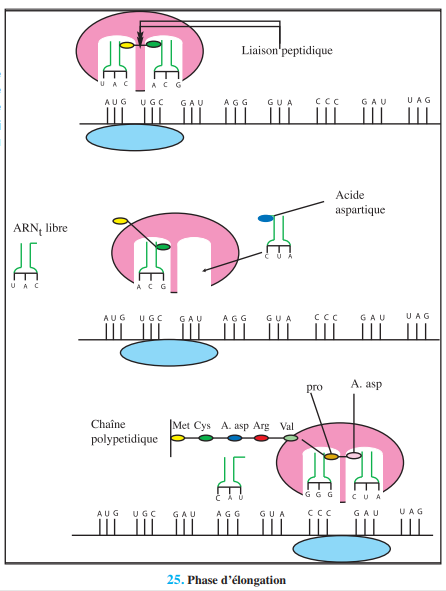
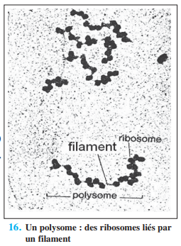
| Critère | Transcription | Traduction |
|---|---|---|
| Lieu | Noyau (chromosomes) | Cytoplasme (ribosomes) |
| Matrice | Brin d'ADN (brin transcrit) | ARNm |
| Produit | ARNm (simple brin) | Chaîne polypeptidique |
| Enzyme principale | ARN polymérase | Ribosome (ARNr + protéines) |
| Acteurs moléculaires | ADN, ARN polymérase, nucléotides ARN (A,U,G,C) | ARNm, ARNt, ribosomes, ATP, acides aminés |
| Règle | Complémentarité ADN → ARNm (T→A, A→U, G→C, C→G) | Codon (ARNm) ↔ Anticodon (ARNt) |
| Énergie | Oui (ATP) | Oui (ATP indispensable) |
Cliquez sur une carte pour révéler la réponse.